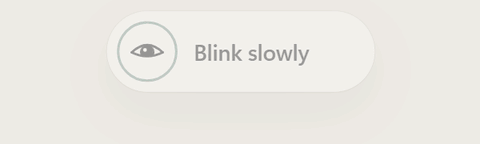

Blink slowly
Every 5 minutes · 10 seconds
A few slow, full blinks. A tiny reset for your eyes.
BlinkBreak is a free desktop app that gently reminds you to blink, look away, and move. For the breaks you mean to take, but forget.
Free to use. No account. Windows, Mac & Linux.

No noisy pop-ups. No complicated routine.
Less remembering. More resting.
Study, code, write, or work as usual. BlinkBreak sits in your system tray or menu bar and quietly keeps track of your next pause.
Every 5 minutes · 10 seconds
A few slow, full blinks. A tiny reset for your eyes.
Every 20 minutes · 20 seconds
Look at something about 20 feet away, not another screen.
Every 30 minutes · 20 seconds
Release your shoulders. Give your back some support.
Every hour · 5 minutes
Get up, stretch, or take a short walk. Your chair can wait.
Every 2 hours · 10 minutes
Leave the screen behind for a proper rest.
These are the defaults, not rules. Change intervals, turn reminders off, or pause any time. Idle-time support varies by desktop.
One small download. A better screen routine.
Free to download and use. No subscription, sign-up, or browser extension. You'll need a Windows, Mac, or Linux computer—not a phone or tablet.
Windows 10 or 11 · 64-bit Intel/AMD
Download for WindowsOpen the downloaded installer and follow the steps. No admin password needed.
macOS 10.15 or newer
Download for Apple Silicon Download for Intel MacNot sure? Apple menu → About This Mac. “Chip: Apple M…” means Apple Silicon.
Open the disk image and drag BlinkBreak to Applications. First-launch approval is explained below.
Recent distributions · 64-bit Intel/AMD
Download for Ubuntu / Debian Download AppImageUbuntu 22.04+ or Debian 12+ recommended. See the install guide for package commands and AppImage permissions.
Downloads come directly from our public GitHub releases. What's new & download checksums
Up and running
Choose the file for your computer above. Open it and follow the short installation steps.
Open Settings to choose your reminder intervals, optional sounds, appearance, and quiet hours.
BlinkBreak keeps running in the system tray or menu bar. Closing the dashboard doesn't stop reminders. Pause or quit from the icon whenever you like.
Need a hand? Open the step-by-step installation guide →
Good to know
Yes. BlinkBreak is free and open source. The app works offline, has no account, and sends no analytics. Settings and daily break counts stay on your computer. It doesn't use your camera. This website has no analytics scripts.
The Windows installer isn't code-signed, and the Mac app isn't notarized by Apple yet. Your computer may ask for approval on the first launch. Only download from the links above, which lead to our GitHub releases. Read the installation guide for the exact approval steps; checksums are available with each release.
Reminders are designed not to steal typing focus. On Windows, they wait while a fullscreen app is active. On Mac and Linux, they don't cover fullscreen apps by default. You can pause reminders from the tray icon. Optional Strict mode shows breaks over fullscreen where your desktop supports it; Linux Wayland doesn't allow this.
Absolutely. Open Settings to change intervals, disable individual reminders, or set quiet hours. Sounds are optional and off by default, with their own volume control. You can preview them before turning them on.
BlinkBreak is a desktop app for Windows, Mac, and Linux. There isn't a phone app or browser extension. You can open this page on your phone and share the link with your computer.